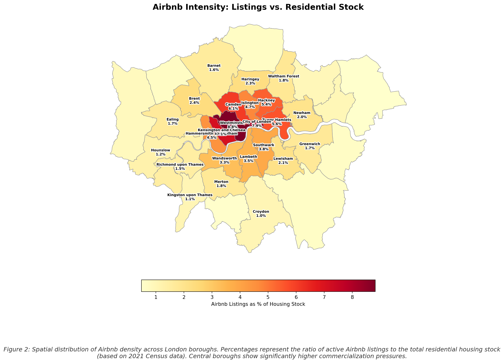
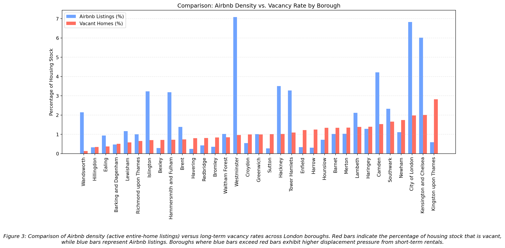
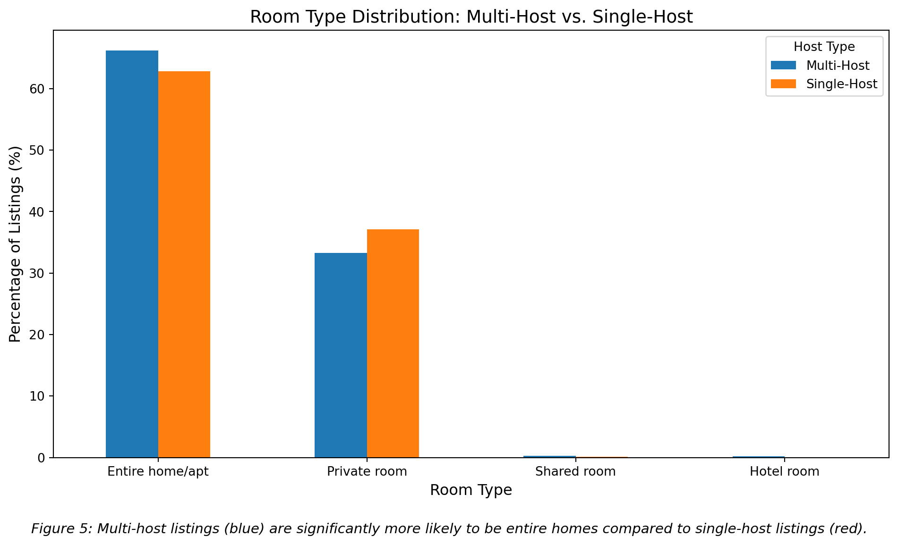

_files/figure-html/cell-16-output-1.png)
InsideAirbnb - London
Introduction
In the middle of an election campaign, a media story linking a mayoral advisor to multiple Airbnb properties has intensified public concern about the role of short-term rentals in London’s housing crisis. In response, the opposition has proposed mandatory registration and higher Council Tax for professional landlords, arguing that Airbnb is “out of control.” As requested by the Mayor, this report assesses the scale of professional landlords and properties on Airbnb in London. On that basis, this report further evaluates the likely impacts of the opposition’s proposal for residents, landlords, and the city, using data, assumptions, and clear reasoning to inform strategic decisions.
1. Is Airbnb out of control in London?
We will explore if Airbnb in London is out of control from three aspects:
1.1 How do Airbnb listings distribute in London?
We start the analysis by investigating the situation of Airbnb density in London with a map of the distribution of each type of room.
Figure 1 shows a significant disparity in listings between “Entire Homes/Apt and Hotel Rooms” and “Private and Shared rooms” in London. This trend is particularly pronounced in central London where the dense clustering of red dots suggests that Airbnb is a short-term commercial rental market rather than a platform for sharing spare bedrooms under the “sharing economy”. This is contrary to the objectives of the Deregulation Act 2015 which aims to support residents rather than provide opportunities for the commercial sector.

When viewed alongside Figure 1, Figure 2 further demonstrates a highly concentrated commercialisation of housing in Central London. The outer boroughs exhibit densities of approximately 1% (lighter yellow/orange) which aligns with the concept of the “sharing economy”. However, there is a sudden spike to dark red in the centre, particularly in Westminster. This indicates a decoupling of central boroughs from the residential housing market.
This distinct “heat effect” visually conveys that short-term rental platforms such as Airbnb are likely displacing long-term tenants and exacerbating the housing crisis in the city’s most desirable areas. We will explore this displacement trend in detail below.
1.2 Airbnb’s negative effects on the long-term rental market in London

Top 5 Boroughs where Airbnb exceeds Vacancy (Ratio > 1):
NAME rate_pct vacant_rate_perc Ratio
7 Wandsworth 2.138675 0.128932 16.587629
0 Westminster 7.082351 0.963448 7.351047
5 Islington 3.228311 0.700668 4.607477
9 Hammersmith and Fulham 3.186462 0.715877 4.451128
22 City of London 6.827803 1.980063 3.448276Figure 3 further demonstrates that the situation of Airbnb in central London is not optimistic and reinforces our view that the platform is out of control in the city. In areas like Westminster and Kensington & Chelsea, the number of active short-term rental properties (blue bars) has far exceeded the number of long-term vacant homes, while outer suburbs like Croydon and Bexley follow the traditional pattern—long-term vacant homes (red bars) remain the primary source of unused housing.
This “crossover” effect refutes the notion that short-term rentals merely utilise surplus housing. Instead, it suggests that in the city’s most vibrant areas the tourism market consumes housing resources at a rate far exceeding the natural vacancy rate. When Airbnb listings are twice or more of the number of vacant homes the platform ceases to be a passive participant in the housing market and becomes a primary driver of scarcity effectively removing far more homes from the long-term rental market than are actually vacant.
_files/figure-html/cell-22-output-1.png)
Figure 4 illustrates the distribution of housing pressure in London, revealing a significant disparity between the city centre and the suburbs.
The map highlights a concentration of boroughs in central London such as Westminster and Kensington & Chelsea marked in red. These areas are characterised by a high number of Airbnb listings and low vacancy rates. This suggests that the housing shortage in the city centre is not caused by vacant properties but rather by residential homes being converted into tourist accommodations.
In contrast, the green areas in the outer suburbs indicate a more traditional pattern: there are high long-term vacancy rates but minimal Airbnb activity. This map demonstrates that the ‘Airbnb crisis’ is not a citywide phenomenon but rather a localised issue confined to the city centre where the platform is competing with residents for scarce housing resources.
1.3 The impacts of Airbnb on rents and housing prices in London
In the context of London’s persistent housing shortage, characterised by high demand and limited long-term rental supply, studies indicate that Airbnb activity can interact with tight housing markets in ways that place additional pressure on rents. Shabrin, Islam and Hasan (2021) suggest that Airbnb activity contributes to increases in both rents and housing prices in London, with a 100% increase in the density of possible Airbnb misuse being associated with up to an 8% increase in unit rental price per bedroom per week.
Limitations
Vacancy data from the rental market is not available, so the vacancy rate is calculated based on all dwellings, not just those available for rental. Some vacant homes may be owner-occupied or otherwise unavailable for renting, so the measure is an approximation, as is the Airbnb ratio. Other factors affecting housing availability or Airbnb distribution (e.g., local regulations, rental demand, property prices) are not included in this part. The dwelling stock data are from 2021, which could cause slight deviations. However, changes in total housing stock over time are relatively modest, so these changes are expected to have minimal impact on the findings.
2. Scope and Scale of the Proposal
2.1 How many professional landlords are there?
Definition of Professional Landlords
Since the opposition proposal focusses on “professional landlords” it is crucial how we define these hosts. As Boto-García (2024) defines, “professional hosts are profit-oriented players who behave similarly to business corporations while non-professional hosts primarily engage in sharing-oriented supply”. The distinction between the two is generally based on the number of accommodations offered, and the type of rooms provided.
Therefore, we take a further exploration of each room type.
Entire Home/apt and Hotel Room have high likelihood of professionalism, because these means their hosts are renting out an entire, separate unit. It is more straightforward to the host of a Hotel room. If a host has multiple “Entire home/apt” listings, they are almost certainly a professional operator, as they are not living in any of the units and are solely focused on commercial rental income.
Private Room and Shared Room have lower likelihood. These often imply a host lives on-site and is renting out a spare bedroom, which is closer to the original, non-commercial ethos of Airbnb. While some professional operators manage multiple private rooms within a single large property, the classification itself is a much softer signal than “Entire home/apt.” We will explore this case later in this section.
Since single-room landlords with “Private” and “Shared” rooms perfectly align with the concept of the “sharing economy”, they are directly excluded from the “professional landlords” category. Therefore, our criteria for a “Professional Landlord” must satisfy a listing count of at least one and a room type of either ‘Entire home/apt’ or ‘Hotel room’.
The number of professional landlords

--- 3. Distribution Comparison (Percentage) ---
Multi-Host Single-Host
room_type
Entire home/apt 66.194485 62.811277
Private room 33.312046 37.084223
Shared room 0.294146 0.086713
Hotel room 0.199323 0.017787Based on our criteria of “Professional Landlord”, there are 35,953 of them, which is 64.43% of the whole number of hosts. This can also be viewed as further evidence showing Airbnb is “out of control” in London.
Limitation:
Multi-room landlords offering “Private” or “Shared” rooms were not categorised as “professional landlords” because their listings’ descriptions exhibit limited overall textual similarity to the professional standards observed in “Entire home/apt” and “Hotel” listings (based on a comparison of word frequency in descriptions, showing an average similarity of approximately 35%). This is a minor limitation as shared and private rooms represent a relatively smaller proportion of all listings (approximately 33%). Therefore, excluding this segment does not significantly alter our main conclusions regarding professional landlord behaviour.
_files/figure-html/cell-25-output-1.png)
--- Room Type Distribution for Multi-Listing Landlords ---
1. Raw Counts:
room_type
Entire home/apt 34206
Private room 17214
Shared room 152
Hotel room 103
2. Percentage Distribution:
room_type
Entire home/apt 66.19%
Private room 33.31%
Shared room 0.29%
Hotel room 0.2%2.2 How many properties would be affected by the opposition’s proposal?
Since the opposition proposed that “professional landlords” should take the responsibility, we estimate 62,000+ (66.39% of London Airbnb market) units will be directly affected, as determined from our analysis in the previous question.
Why these properties?
Under the proposal, all 62,000+ professional properties will be subject to mandatory registration and taxed at a higher rate. Conversely the remaining approximately 33,000 ‘private and shared room’ accommodations (accounting for 33% of the market share) will be exempt from this tax. This provides the mayor with a political barrier protecting residents who rent out spare rooms for a living.
Although the 62,000 units of housing only account for approximately 1.6% of the total 3.8 million housing units in London (London’s Housing Stock Research Unit, 2024), their impact is not uniform. Most of these affected properties are concentrated in Zones 1 and 2. For example, in Westminster, which recorded the UK’s highest short-let guest nights (around 3.9m in 2024) according to Housing Analysis Team (Housing Analysis Team, 2025), the tax would affect approximately 8.8% of the borough’s housing stock. Therefore, this policy would be a targeted measure.
Beyond the directly targeted short-term rental stock, non-professional hosts and renters will also experience the ripple effects through broader housing market dynamics. The opposition’s proposal could reduce a supplementary income stream from which they often support mortgages or living costs. More critically, while the policy aims to increase long-term supply, it risks pushing these properties into vacancy, sale, or less regulated grey-market letting.
3. Evaluation of the proposal
3.1 What are the likely pros and cons of the opposition’s proposal?
The opposition’s proposal helps the Mayor demonstrate responsiveness and leadership on the highly salient public concern of housing. Secondly, because the proposal targets professional landlords and areas where short-term rental pressures are most concentrated, it can also be presented as a proportionate and targeted intervention which reduces the political cost of decisive action. Besides, the proposal helps shift the conversation away from a personal scandal involving the Mayor’s advisor and towards a system-level regulatory challenge. Finally, mandatory registration creates a formal need for platform-held data, which makes it easier to push for structured data-sharing arrangements. However, to implement this proposal will present several potential risks. Firstly, as the Mayor did not introduce the policy initially, any implementation difficulties or a gap between promises and outcomes will be interpreted as evidence of weak leadership. Additionally, registration and licensing regimes are administratively complex and resource-intensive, which is difficult to deliver at scale. Experience in Scotland shows that delays in processing and limited enforcement capacity can turn the policy from a sign of control into evidence of administrative weakness.
For professional landlords, stricter regulations might bring more profits to those compliant operators, because guests tend to choose legal accommodations, which incentivises professional landlords to adhere to regulations (Boto-García, 2024). It also raises costs for non-compliant multi-listing operators, reducing unfair competition for those who operate within the rules. Meanwhile, higher compliance costs may reduce the relative attractiveness of short-term letting, prompting some properties to return to the long-term rental market. This could expand housing options for residents and, to some extent, improve neighbourhood stability and living conditions. However, the proposal would significantly increase operating costs for professional landlords. The attempt of passing the additional costs on to guests may cause customer reduction in a competitive market, creating further downward pressure on profitability. The proposal will also result in the loss of secondary income sources for some individuals, such as middle-class hosts renting their holiday properties and young investors letting their buy-to-let properties. These are misidentified as professional landlords. Additionally, in some areas where profits remain high, increased compliance costs may incentivise landlords to move transactions off-platform in order to avoid regulation, which is risky for both hosts and guests by removing both parties from platform safeguards.
Firstly, the policy increases data availability and supports clearer enforcement of specific regulatory requirements by enabling more systematic registration. Secondly, the Council Tax can be used to pay for enforcement teams, neighbourhood services or affordable housing programmes thereby strengthening the policy’s legitimacy. Thirdly, it helps preserve local specificity in the regulation of rental housing markets. Research suggests that platforms often pursue uniform regulatory standards across cities to minimise compliance costs. This proposal however helps ground regulation in local contexts and supports data-driven and effective implementation(Ferreri and Sanyal, 2018). However, there are several potential obstacles. Firstly, delivery and cost pressures are high. Registration or licensing requires ongoing investment in systems, processing inspections and enforcement (Scottish Government, 2025) and implementation can be constrained by limited capacity and competing priorities (Propertymark, no date). Secondly, stricter registration and higher tax treatment may reduce market dynamism by raising entry barriers for new and smaller platforms (Shabrina et al., 2017). Thirdly, locally tailored regulation in London may create friction with national frameworks. Short-term rentals cut across planning taxation data access and platform accountability which can conflict with more standardised UK-wide systems (Lord and Tewdwr-Jones, 2014).
References
Boto-García, D. (2024) “Illegal Airbnb properties and hosts’ professionalism,” Tourism Economics, 31(4).
Ferreri, M. and Sanyal, R. (2018) “Platform economies and urban planning Airbnb and regulated deregulation in London,” Urban Studies, 55(15), pp. 3353–3368.
Housing Analysis Team (2025) Short-term lets through online collaborative economy platforms, UK. Office for National Statistics. Available at: https://www.ons.gov.uk/peoplepopulationandcommunity/housing/bulletins/shorttermletsthroughonlinecollaborativeeconomyplatformsuk/januarytodecember2024.
London Growth Plan (2025) London’s growth plan. Available at: https://growthplan.london/.
London’s Housing Stock Research Unit (2024) London’s housing stock. Greater London Authority. Available at: https://www.london.gov.uk/sites/default/files/2024-11/London%27s%20Housing%20Stock%20-%20Research%20Unit%20-%20November%202024.pdf.
Lord, A. and Tewdwr-Jones, M. (2014) “Is Planning ‘Under Attack’? Chronicling the Deregulation of Urban and Environmental Planning in England,” European Planning Studies, 22(2), pp. 345–361.
Propertymark (no date) STL licensing report suggests scheme is raising standards despite concerns. Propertymark. Available at: https://www.propertymark.co.uk/resource/stl-licensing-report-suggests-scheme-is-raising-standards-despite-concerns.html.
Scottish Government (2025) Short term lets licensing statistics Scotland to 30 June 2025. Scottish Government. Available at: https://www.gov.scot/publications/short-term-lets-licensing-statistics-scotland-to-30-june-2025/.
Shabrin, M., Islam, R. and Hasan, M. (2021) “Air pollution and sustainable materials,” Journal of Environmental Design, 15(2), pp. 45–60.
Shabrina, Z. et al. (2017) Beyond informality: The rise of peer-to-peer (P2P) renting. 209. Centre for Advanced Spatial Analysis, University College London. Available at: https://www.ucl.ac.uk/bartlett/publications/2017/mar/casa-working-paper-209.